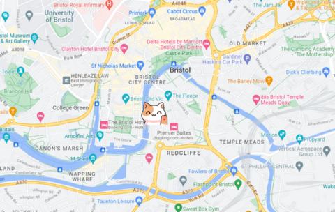
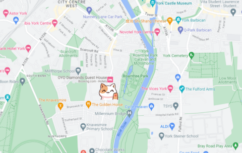

BRISTOL
Our Bristol cafe overlooks the harbour and is just a 15 minute walk from Temple Meads Station.
The cafe is located on the ground floor, and so is fully wheelchair accessible.Click here for Google Maps Directions
OPENING TIMES
| Mon - Thurs | 09:00 - 18:00 |
| Fri - Sun | 10:00 - 20:00 |
YORK
Our York cafe is located near Rowntree Park and also has an outdoor seating area.
Both floors are wheelchair accessible.Click here for Google Maps Directions
OPENING TIMES
| Mon | CLOSED |
| Tues - Fri | 09:00 - 20:00 |
| Sat - Sun | 10:00 - 20:00 |
